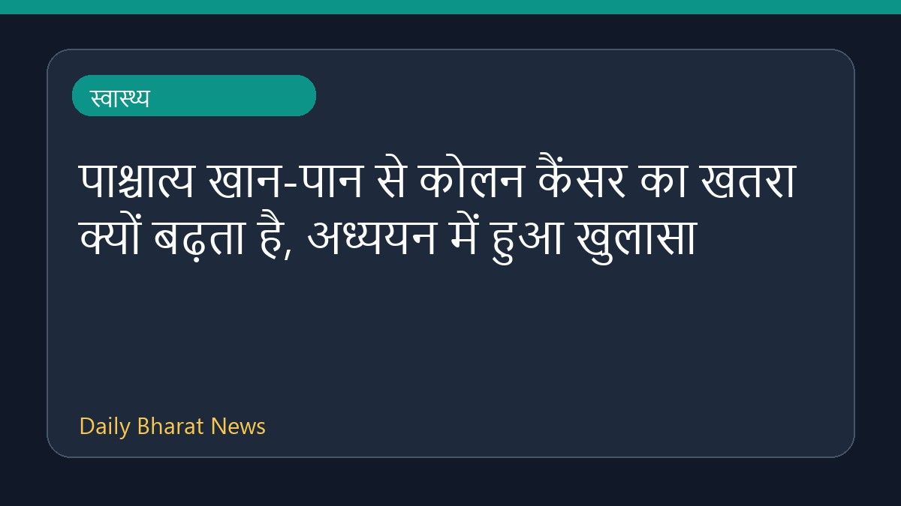

पाश्चात्य खान-पान से कोलन कैंसर का खतरा क्यों बढ़ता है, अध्ययन में हुआ खुलासा

हाल ही में सामने आए एक नए अध्ययन के अनुसार, पाश्चात्य खान-पान और कोलन कैंसर के बढ़ते जोखिम के बीच सीधा संबंध हो सकता है। शोधकर्ताओं का मानना है कि पेट में मौजूद बैक्टीरिया इस पूरी प्रक्रिया को समझाने में मदद कर सकते हैं कि यह आहार किस प्रकार शरीर को प्रभावित करता है। हालांकि, इस विषय पर अभी और विस्तृत शोध की आवश्यकता है ताकि इस संबंध को पूरी तरह से समझा जा सके। फिलहाल इस संबंध में उपलब्ध विवरण काफी सीमित हैं।
मूल स्रोत: Health News Sources
Gut Bacteria May Explain How Western Diet Raises Colon Cancer Risk: Study - ndtv.com ↗
Gut Bacteria May Explain How Western Diet Raises Colon Cancer Risk: Study - ndtv.com ↗